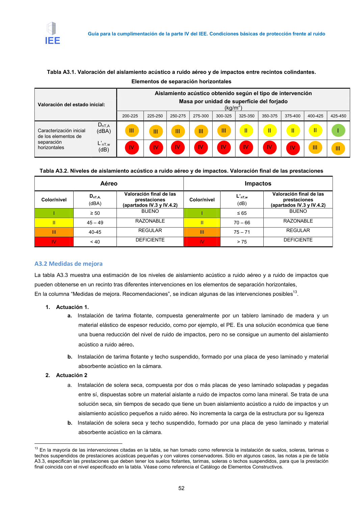

IEE 2016 · edición 2016-11-01 · capa guia
Documento GUIA-PDF-a5d4ef5252ba · SHA-256 del PDF 813669d3066c0ff79457d57b80b0512a4fbb248bc5db1f7baf473c369a064738
Página física 62 de 65.
Copia fiel del PDF fuente · Fuente oficial
Ficha de la disposición en la fuente oficial
Créditos y autoría en el PDF fuente. Reproducción con cita de fuente y autores.
Permiso literal: Se permite la reproducción del contenido total o parcial de esta Guía siempre y cuando se haga citando la fuente original.
Guía para la cumplimentación de la parte IV del IEE. Condiciones básicas de protección frente al ruido
Dirección y coordinación
Luis Vega Catalán
Mª Cristina Colomo Fernández
Eduardo González de Prado
Dirección General de Arquitectura, Vivienda y Suelo. Ministerio de Fomento
Mª Teresa Carrascal García
Instituto de Ciencias de la Construcción Eduardo Torroja. IETcc- CSIC
Autores
Mª Teresa Carrascal García
Amelia Romero Fernández
Mª Belén Casla Herguedas
Unidad de Calidad en la Construcción del Instituto de Ciencias de la Construcción Eduardo Torroja IETcc- CSIC
Se agradece la colaboración de
Belén Delgado Giménez
Fundación FIDAS
Alberto Esteban González
C.T.O. Estudios y proyectos – Gikesa
Giovanni Muzio
C.T.O. Estudios y proyectos
Francisco Labastida Azemar
Arquitecto, asesor CSCAE
Pedro F. Nogueira López
Universidad de A Coruña
Alejandro Sansegundo Sierra
Acústica SanSegundo
Esta Guía para la cumplimentación de la parte IV del IEE. Condiciones básicas de protección frente al ruido, nace en el marco del
convenio de colaboración llevado a cabo entre el Ministerio de Fomento y el Instituto de Ciencias de la Construcción Eduardo Torroja y
forma parte de la estrategia de este Ministerio de generar una serie de documentos de ayuda que faciliten la aplicación de la normativa
de la edificación y que en este caso concreto, ofrezca a los técnicos criterios para poder realizar una evaluación del estado inicial de las
edificaciones en lo referente a las condiciones acústicas de las viviendas existentes y plantear medidas que incrementen su confort
acústico.
En la redacción de este documento se ha utilizado algunos de los contenidos y de las figuras de la Guía de aplicación del DB HR
Protección frente al ruido. Dicha guía puede consultarse en:
http://www.codigotecnico.org/index.php/menu-documentos-complementarios/menu-guia-aplicacion-db-hr
Se permite la reproducción del contenido total o parcial de esta Guía siempre y cuando se haga citando la fuente original.
2Formato: Texto de la página (Markdown)
Guía para la cumplimentación de la parte IV del IEE. Condiciones básicas de protección frente al ruido
52
Tabla A3.1. Valoración del aislamiento acústico a ruido aéreo y de impactos entre recintos colindantes.
Elementos de separación horizontales
Valoración del estado inicial:
Aislamiento acústico obtenido según el tipo de intervención
Masa por unidad de superficie del forjado
(kg/m2)
200-225
225-250
250-275
275-300
300-325
325-350
350-375
375-400
400-425
425-450
Caracterización inicial
de los elementos de
separación
horizontales
DnT,A
(dBA)
L’nT,w
(dB)
Tabla A3.2. Niveles de aislamiento acústico a ruido aéreo y de impactos. Valoración final de las prestaciones
Aéreo
Impactos
Color/nivel
DnT,A,
(dBA)
Valoración final de las
prestaciones
(apartados IV.3 y IV.4.2)
Color/nivel
L’nT,w
(dB)
Valoración final de las
prestaciones
(apartados IV.3 y IV.4.2)
I
≥ 50
BUENO
I
≤ 65
BUENO
II
45 – 49
RAZONABLE
II
70 – 66
RAZONABLE
III
40-45
REGULAR
III
75 – 71
REGULAR
IV
< 40
DEFICIENTE
IV
> 75
DEFICIENTE
A3.2 Medidas de mejora
La tabla A3.3 muestra una estimación de los niveles de aislamiento acústico a ruido aéreo y a ruido de impactos que
pueden obtenerse en un recinto tras diferentes intervenciones en los elementos de separación horizontales,
En la columna “Medidas de mejora. Recomendaciones”, se indican algunas de las intervenciones posibles13.
1.
Actuación 1.
a. Instalación de tarima flotante, compuesta generalmente por un tablero laminado de madera y un
material elástico de espesor reducido, como por ejemplo, el PE. Es una solución económica que tiene
una buena reducción del nivel de ruido de impactos, pero no se consigue un aumento del aislamiento
acústico a ruido aéreo.
b. Instalación de tarima flotante y techo suspendido, formado por una placa de yeso laminado y material
absorbente acústico en la cámara.
2.
Actuación 2
a. Instalación de solera seca, compuesta por dos o más placas de yeso laminado solapadas y pegadas
entre sí, dispuestas sobre un material aislante a ruido de impactos como lana mineral. Se trata de una
solución seca, sin tiempos de secado que tiene un buen aislamiento acústico a ruido de impactos y un
aislamiento acústico pequeños a ruido aéreo. No incrementa la carga de la estructura por su ligereza
b. Instalación de solera seca y techo suspendido, formado por una placa de yeso laminado y material
absorbente acústico en la cámara.
13 En la mayoría de las intervenciones citadas en la tabla, se han tomado como referencia la instalación de suelos, soleras, tarimas o
techos suspendidos de prestaciones acústicas pequeñas y con valores conservadores. Sólo en algunos casos, las notas a pie de tabla
A3.3, especifican las prestaciones que deben tener los suelos flotantes, tarimas, soleras o techos suspendidos, para que la prestación
final coincida con el nivel especificado en la tabla. Véase como referencia el Catálogo de Elementos Constructivos.
IV
III
IV
IV
IV
IV
IV
IV
IV
III
III
III
III
III
II
II
II
II
I
III

Datos candidatos: compruebe celdas y notas en el PDF.